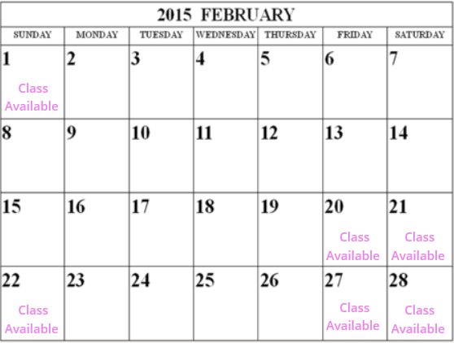

Classes & Events
Cookie Decorating Classes
Have an evening full of fun, laughter and sugar with your friends while learning new cookie decorating skills at our "Pre-baked, Decorate & Take" parties!
For $30/person.
I bring all the supplies to a hostesses home (including pre-baked cookies, pre-coloured royal icing, decorating sugars, piping bags, a variety of icing tips and anything else we need).
In the 2.5 hour Basic Decorating class: I will teach you about royal icing consistencies and uses, how to do basic piping, 3 decorating techniques and each person will go home with 4 decorated cookies to amaze your friends and family, (and the skills to do it again). You will also receive a packet listing all the tools we used, tips and tricks to help you next time, along with a basic sugar cookie and royal icing recipe.
To book your party we require a minimum number of 5 people (and a maximum of 9) and a 25% deposit to secure your date (refundable up to 10 days before your party date). Remember we can use any theme you like! We can taylor the party for a baby shower, for adult birthdays, for a evening with your friends or any other occasion you can think of!
Cookie Decorating Classes
Please contact us for reservations
Recent Events
Dessert Festival
Canada Place, North Point, Vancouver, April-05-2015 10:00 am-9:00 pm
A celebration benefitting babies & children at Vancouver. Spend the day strolling Robson Square and sampling Vancouver’s finest Cakes and Cookies from the city’s greatest bakers.
Vancouver Food & Cooking Festival
Robson Square, Vancouver, May-16-2015 9:00 am-9:00 pm.
New hands-on workshops, exclusive guest chef dinners and special events throughout the city. With over 250 exhibitors including celebrity chefs celebrating all things food, drink and cooking.
Christmas Market
Vancouver, Vancouver, Dec-19-2015 6:00 pm-10:00 pm
During your visit to the Christmas Market you’ll experience our mix of traditional food and beverage, as well as our selection of authentic wood carvings and toys, knitted goods, nutcrackers, pottery and other unique gifts. Stop off at our special children’s area, the Kid’s Market, to make Christmas gifts and ride downtown Vancouver’s only Christmas Carousel.